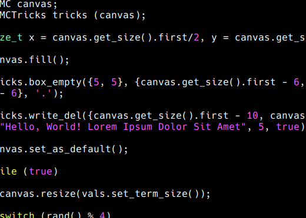

± Projects
Perspectiva Project
–•– About it –•–
As said in its GitHub README.md file, Perspectiva is a POSIX-only header library for C++ that implements ASCII and CUI manipulation techniques.
It is designed to be understandable and efficient. Its documentation will be developed in paralel, but it is expected to be complete after the first release.
This works as a more specific exercise of Akai Keisanki's C/C++ library development skills.

–•– Access –•–
GitHub
For WIP Perspectiva Project.